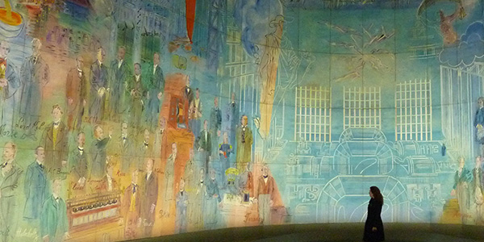
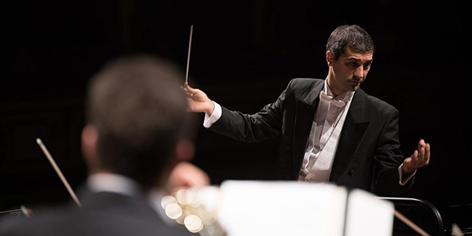
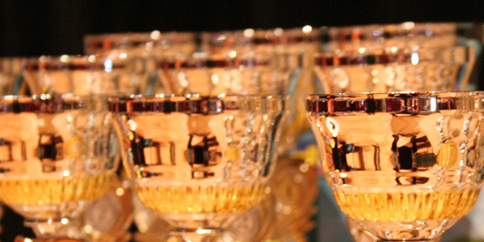

HOME
> 재단소개 >
연혁
연혁
금호문화재단의 새로운 이야기가 쓰여지기까지
놀라운 성장 기록을 소개합니다
1977 ~ 1993
금호문화재단의 시작
1977 ~
1993
1993
- 1977
- 11월 29일 금호문화재단 설립
- 1987
- 금호예술아카데미 개설
- 1989
- 금호갤러리 개관 (서울 관훈동)

- 1990
- 한국 최초 직업 실내악 연주단체 '금호현악사중주단' 창단
- 1993
- 젊은 음악가를 위한 명품 고악기 무상 임대 제도 '금호악기은행' 개설
1994 ~ 1999
금호문화재단의 도약
1994 ~
1999
1999
- 1994
- 故 박성용 이사장 문화훈장 최고등급 문화무궁화장 수상
- 1996
- 금호미술관 건립 (서울 사간동: 금호갤러리 확장 이전)
- 1997
- '금호갤러리 금요콘서트' 개설
(現 ‘아름다운 목요일’시리즈)
- 1998
- '금호갤러리 영재콘서트' 개설
(現 ‘금호영재콘서트’시리즈)
- 1999
- '금호갤러리 영아티스트콘서트' 개설
(現 ‘금호영아티스트콘서트’시리즈)

2000 ~ 2009
금호문화의 밀레니엄
2000 ~
2009
2009
- 2000
- 금호아트홀 개관 (서울 광화문)
- 2002
- 대통령 표창 '한국메세나대상' 수상

- 2003
- '금호월드오케스트라 시리즈' 개설
- 2004
- 금호음악인상 제정
- 금호미술관 금호영아티스트 공모 시작
- 故 박성용 이사장 '몽블랑 문화예술 후원자 상' 수상
- 2005
- 금호창작스튜디오 개관 (경기 이천시)
- 2006
- 문호아트홀 개관 (서울 광화문)
- 2007
- 금호아시아나솔로이스츠 창단
- 금호예술아카데미 20주년 기념 자료전
- 2008
- '금호영체임버콘서트' 시리즈 개설
- '유토피아-이상에서 현실로' 디자인 기획전
- 금호예술기금: 제 1회 예술의전당 음악영재 캠프&콩쿠르 개최
- 2009
- 금호미술관 개관 20주년 기념전
2010 ~ 현재
금호문화재단의 현재
2010 ~
현재
현재
- 2011
- 금호영아티스트 7주년 기념전
- 2013
- 금호아트홀 '상주음악가' 시리즈 개설
- 박강자 금호미술관 관장 박물관, 미술관 발전 유공자 정부 국무총리 표창
- 2014
- 박삼구 이사장 '몽블랑 문화예술 후원자 상' 수상
- 2015
- 금호아트홀 연세 개관
- 2019
- 금호아트홀(광화문) 폐관
- '금호아트홀 연세'로 재단 기획공연 이전 운영